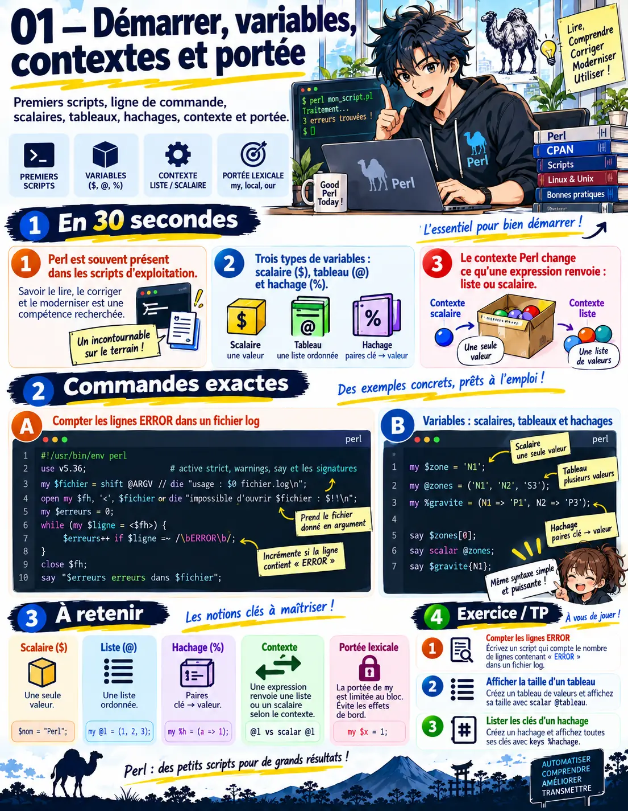
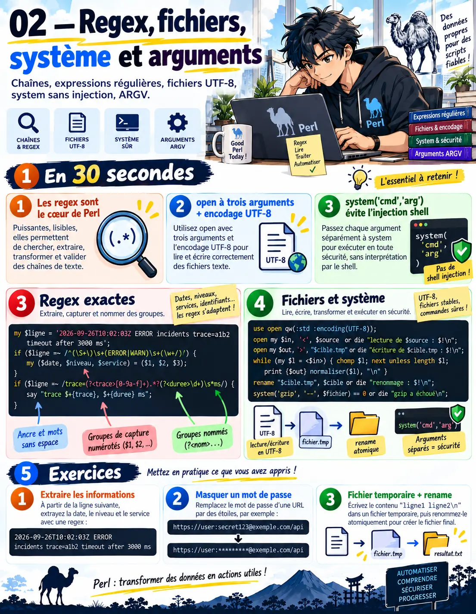
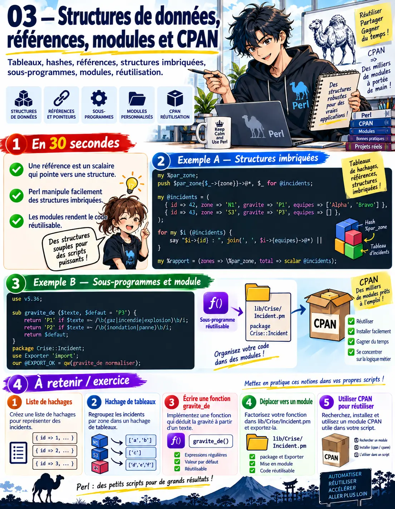
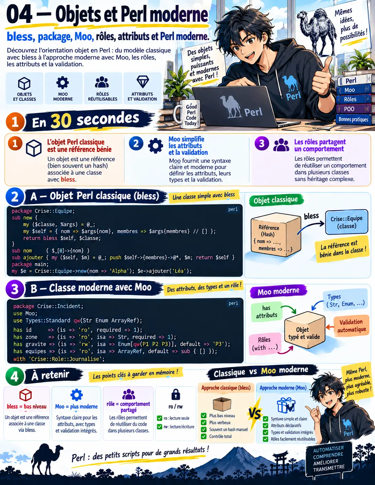
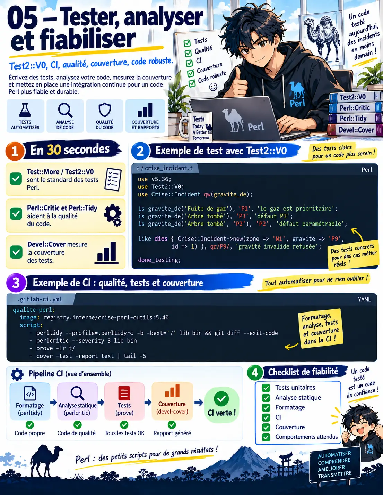
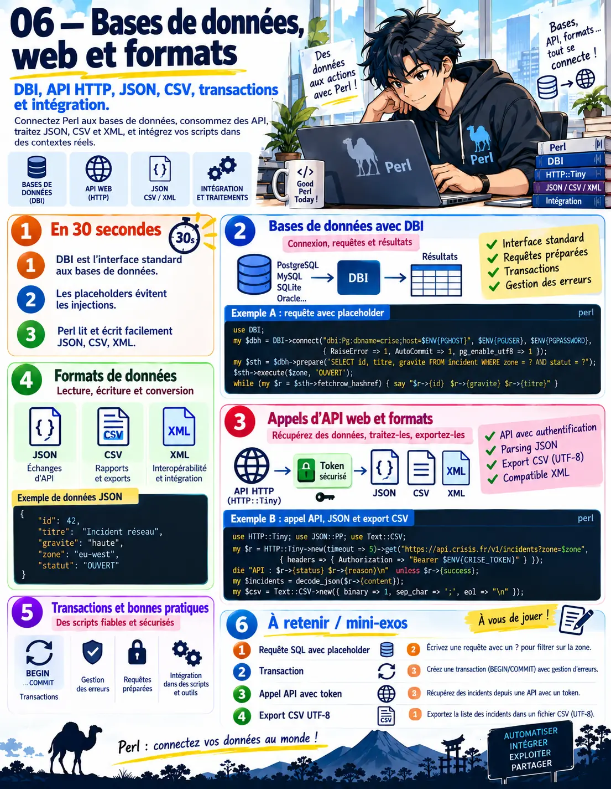
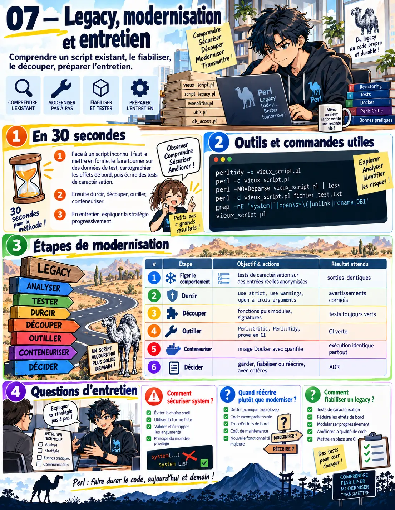

Dix chapitres pour lire, maintenir et moderniser des scripts Perl existants, puis en écrire de nouveaux proprement : Perl en ligne de commande, variables et contextes, expressions régulières, fichiers et commandes système sans injection, références et structures de données, sous-programmes, modules et CPAN, objets avec Moo et Perl moderne (5.36 à 5.40), tests et qualité (Test2, Perl::Critic, Perl::Tidy), bases de données avec DBI, API et formats, et la reprise d'un script legacy. Tout tourne en conteneur ; chaque chapitre a ses exercices corrigés et un travail pratique avec correction type.
≈ 40 h de travail · prérequis : bases de la ligne de commande ; aucun Perl nécessaire.
Démarrer : Perl dans l'entreprise, premiers scripts, lignes de commande
En 30 secondes
Perl reste très présent dans les scripts d'exploitation, les traitements de fichiers et les outils internes : savoir le lire, le corriger et le moderniser est une compétence recherchée.
Tout script commence par use strict et use warnings (ou use v5.36, qui les active) : ils attrapent la majorité des erreurs de débutant.
Les options -n, -p, -i, -l, -a, -F et -e font de Perl un outil de ligne de commande redoutable pour transformer des fichiers.
Sans use strict, une faute de frappe crée une nouvelle variable en silence : strict et warnings attrapent l'erreur dès la première exécution.
À la fin de ce chapitre, tu sauras
Exécuter Perl en conteneur et lire la documentation
Écrire un premier script propre
Utiliser Perl en ligne de commande pour filtrer et transformer
Un premier script propre
Tout en conteneur : alias perl='docker run --rm -i -v "$PWD:/w" -w /w perl:5.40 perl' ; l'image officielle contient aussi cpanm pour installer les modules.
#!/usr/bin/env perl
use v5.36; # active strict, warnings, say et les signatures
my $fichier = shift @ARGV // die "usage : $0 fichier.log\n";
open my $fh, '<', $fichier or die "impossible d'ouvrir $fichier : $!\n";
my $erreurs = 0;
while (my $ligne = <$fh>) {
$erreurs++ if $ligne =~ /\bERROR\b/;
}
close $fh;
say "$erreurs erreurs dans $fichier";
exit($erreurs > 0 ? 1 : 0); # code de sortie lisible par un planificateur
# docker run --rm -v "$PWD:/w" -w /w perl:5.40 perl compter_erreurs.pl app.log
Perl en ligne de commande
perl -ne 'print if /ERROR/' app.log # comme grep
perl -pe 's/\bpassword=\S+/password=****/g' app.log # comme sed, masquage
perl -i.bak -pe 's/^timeout=30$/timeout=60/' config.ini # modification en place avec sauvegarde
perl -lane 'print $F[2] if $F[0] eq "incident"' export.txt # colonnes séparées par des espaces
perl -F';' -lane '$t{$F[1]} += $F[3]; END { print "$_ $t{$_}" for sort keys %t }' ventes.csv # total par zone
La documentation
perldoc est la référence, disponible hors ligne dans le conteneur : perldoc perlintro pour démarrer, perldoc -f open pour une fonction, perldoc perlre pour les expressions régulières, perldoc Module::Nom pour un module.
Exercice 1.1
Un script existant n'a ni use strict ni use warnings. Que se passe-t-il si tu les ajoutes ?
Corrigé
Il va probablement signaler des variables non déclarées et des usages douteux : c'est précieux, mais cela peut casser l'exécution. On les ajoute sur une copie, on corrige les avertissements un par un, et des tests de caractérisation vérifient que le comportement ne change pas.
Exercice 1.2
Question d'entretien : pourquoi Perl est-il encore utilisé ?
Corrigé
Pour son traitement de texte et d'expressions régulières, sa présence sur tous les systèmes Unix, sa stabilité sur des décennies et l'énorme base de scripts existants ; beaucoup d'outils d'exploitation reposent encore dessus, et il faut savoir les maintenir.
Travail pratique 1 — Mes premiers outils Perl
Exécuter Perl 5.40 en conteneur et lire perldoc perlintro.
Écrire compter_erreurs.pl avec use v5.36, message d'usage et code de sortie.
Refaire cinq commandes grep, sed et awk de ton quotidien en une ligne de Perl.
Correction type
Attendu : le script refuse proprement un fichier absent, sort avec 1 s'il trouve des erreurs ; les cinq lignes de commande donnent le même résultat que les outils d'origine.
Chapitre 2Débutant
Variables, contextes et portée
En 30 secondes
Trois types de variables : scalaire ($), tableau (@) et hachage (%) ; le signe devant le nom dit ce que l'on manipule, pas ce que l'on a déclaré.
Le contexte change le résultat : un tableau en contexte scalaire donne sa taille, en contexte liste ses éléments ; c'est la première source de surprises.
my déclare une variable lexicale, limitée au bloc ; local sauvegarde temporairement une variable globale : on utilise my presque toujours.
Un tableau en contexte scalaire vaut sa taille : pour les éléments, on reste en contexte liste ou on les joint explicitement.
À la fin de ce chapitre, tu sauras
Manipuler scalaires, tableaux et hachages
Prévoir le résultat selon le contexte
Choisir la bonne portée
Les trois types
my $zone = 'N1'; # scalaire : chaîne, nombre, référence
my @zones = ('N1', 'N2', 'S3'); # tableau : liste ordonnée
my %gravite = (N1 => 'P1', N2 => 'P3'); # hachage : clés → valeurs
say $zones[0]; # un élément d'un tableau : $
say scalar @zones; # 3 (nombre d'éléments)
say $gravite{N1}; # un élément d'un hachage : $
my @cles = sort keys %gravite;
while (my ($z, $g) = each %gravite) { say "$z : $g" }
say exists $gravite{S3} ? 'connue' : 'inconnue';
Le contexte
Une même expression renvoie autre chose selon qu'on attend une valeur ou une liste : l'affectation à un scalaire impose le contexte scalaire, à un tableau le contexte liste.
my @lignes = <$fh>; # contexte liste : toutes les lignes
my $ligne = <$fh>; # contexte scalaire : une seule ligne
my $n = @zones; # 3 : taille du tableau
my ($premier) = @zones; # 'N1' : les parenthèses imposent la liste
my $heure = localtime; # « Sat Sep 26 10:00:00 2026 » (scalaire)
my @parts = localtime; # (sec, min, heure, jour, …) (liste)
Portée
my limite la variable au bloc qui l'entoure, ce qui évite les effets de bord ; our déclare une variable de paquetage ; local donne une valeur temporaire à une variable globale (par exemple $/ pour lire un fichier d'un coup), restaurée à la sortie du bloc.
my $contenu = do { local $/; <$fh> }; # lecture complète : $/ vaut undef dans ce bloc seulement

Fiche visuelle : démarrer, variables, contextes et portée
Exercice 2.1
Pourquoi print "Il y a " . @zones . " zones" affiche-t-il le nombre de zones ?
Corrigé
L'opérateur de concaténation impose le contexte scalaire, dans lequel un tableau vaut sa taille ; pour afficher les éléments, on écrit "@zones" dans la chaîne (interpolation avec espaces) ou join(', ', @zones).
Exercice 2.2
Question d'entretien : différence entre my et local ?
Corrigé
my crée une nouvelle variable lexicale visible seulement dans son bloc ; local ne crée rien, il sauvegarde la valeur d'une variable globale et la restaure à la fin du bloc. On utilise local surtout pour des variables spéciales comme $/ ou $,.
Travail pratique 2 — Inventaire des incidents
Lire un export CSV d'incidents et compter les incidents par zone dans un hachage.
Afficher les zones triées par nombre décroissant, puis par nom.
Relire un fichier d'un bloc avec local $/ et compter les lignes vides.
Correction type
Attendu : les totaux correspondent à une vérification en SQL ou à la main ; le tri gère les égalités ; aucune variable globale non déclarée (use strict ne se plaint pas).
Chapitre 3Confirmé
Chaînes et expressions régulières
En 30 secondes
Les expressions régulières sont le cœur de Perl : correspondance (m//), substitution (s///), translittération (tr///), avec captures et modificateurs.
Le modificateur x rend une expression longue lisible (espaces et commentaires) ; les captures nommées et qr// permettent de les réutiliser et de les tester.
Les pièges classiques : quantificateurs gourmands, points qui traversent les lignes, caractères non échappés, et expressions coûteuses sur de gros fichiers.
Un .* va jusqu'au bout de la ligne : on limite la correspondance à la valeur visée, et on teste l'expression sur des lignes réelles.
À la fin de ce chapitre, tu sauras
Écrire des expressions de correspondance et de substitution
Rendre une expression lisible et réutilisable
Éviter les pièges de performance et de sens
Correspondre et capturer
my $ligne = '2026-09-26T10:02:03Z ERROR incidents trace=a1b2 timeout after 3000 ms';
if ($ligne =~ /^(\S+)\s+(ERROR|WARN)\s+(\w+)/) {
my ($date, $niveau, $service) = ($1, $2, $3);
}
if ($ligne =~ /trace=(?<trace>[0-9a-f]+).*?(?<duree>\d+)\s*ms/) {
say "trace $+{trace}, $+{duree} ms"; # captures nommées
}
my @nombres = $ligne =~ /(\d+)/g; # toutes les correspondances en contexte liste
Substituer, lisiblement
Le modificateur x autorise espaces et commentaires ; qr// compile une expression réutilisable ; /e évalue le remplacement comme du code, à utiliser avec prudence.
my $ligne_journal = qr{
^ (?<date> \d{4}-\d{2}-\d{2} T [\d:]+ Z ) \s+
(?<niveau> ERROR | WARN | INFO ) \s+
(?<service> [a-z-]+ ) \s+
(?<message> .* ) $
}x;
(my $masque = $ligne) =~ s/\b(token|password)=\S+/$1=****/gi; # masquer sans modifier l'original
$texte =~ tr/a-z/A-Z/; # translittération (majuscules)
my $n = ($texte =~ tr/\n//); # compter les fins de ligne
Pièges
Piège
Symptôme
Parade
Quantificateur gourmand
/".*"/ prend du premier au dernier guillemet
/".*?"/ ou /"[^"]*"/
Point et fins de ligne
le point ne traverse pas \n par défaut
modificateur s, ou [\s\S]
Caractères spéciaux d'une variable
un point ou une parenthèse dans $motif
\Q$motif\E ou quotemeta
Retour en arrière catastrophique
(a+)+ sur une longue chaîne
expressions sans imbrication ambiguë, possessifs, ancrages
$1 d'une correspondance précédente
l'échec ne remet pas $1 à zéro
tester le résultat de la correspondance
Exercice 3.1
Un script masque les mots de passe avec s/password=.*/password=****/ et efface la fin des lignes. Pourquoi ?
Corrigé
Le .* est gourmand et va jusqu'à la fin de la ligne. On limite à la valeur : s/password=\S+/password=****/g, ou jusqu'au séparateur attendu : s/password=[^&\s]+/password=****/g.
Exercice 3.2
Question d'entretien : à quoi sert qr// ?
Corrigé
À compiler une expression une fois et la réutiliser, la passer en paramètre ou la combiner avec d'autres ; avec le modificateur x, on obtient des expressions lisibles, commentées et testables.
Travail pratique 3 — Analyseur de journaux
Écrire une expression qr//x qui découpe les lignes de journal de CrisisShield en date, niveau, service et message.
Masquer jetons et mots de passe dans une copie des journaux.
Compter les erreurs par service et par heure ; mesurer le temps sur un fichier de 500 000 lignes.
Correction type
Attendu : 100 % des lignes valides reconnues, les autres comptées à part ; aucun secret dans la copie ; traitement du gros fichier en quelques secondes.
Chapitre 4Confirmé
Fichiers, système et arguments
En 30 secondes
On ouvre les fichiers avec open à trois arguments et un descripteur lexical, en vérifiant toujours le résultat ; on précise l'encodage (UTF-8).
Les commandes système se lancent sous forme de liste (sans passer par le shell) pour éviter l'injection ; on vérifie le code de retour.
Getopt::Long lit les options, %ENV les variables d'environnement ; le code de sortie dit au planificateur si le script a réussi.
Une commande construite par concaténation passe par le shell et s'injecte : la forme liste de system passe les arguments tels quels, sans interprétation.
À la fin de ce chapitre, tu sauras
Lire et écrire des fichiers de façon sûre, en UTF-8
Lancer des commandes système sans injection
Écrire un script paramétrable et prévisible
Fichiers et encodage
use v5.36;
use open qw(:std :encoding(UTF-8)); # entrées-sorties en UTF-8 par défaut
open my $in, '<', $source or die "lecture de $source : $!\n";
open my $out, '>', "$cible.tmp" or die "écriture de $cible.tmp : $!\n";
while (my $l = <$in>) { chomp $l; next unless length $l; print {$out} normaliser($l), "\n" }
close $out or die "fermeture : $!\n";
rename "$cible.tmp", $cible or die "renommage : $!\n"; # écriture atomique : jamais de fichier à moitié écrit
Commandes système
La forme liste de system passe les arguments directement au programme, sans shell : un nom de fichier contenant « ; rm -rf » reste un nom de fichier. Les accents graves et la forme chaîne passent par le shell : à éviter avec des données externes.
# dangereux : system("gzip $fichier"); → injection si $fichier vient de l'extérieur
system('gzip', '--', $fichier) == 0 or die "gzip a échoué : code " . ($? >> 8) . "\n";
open my $ps, '-|', 'ps', '-eo', 'pid,comm' or die "ps : $!\n"; # lire la sortie d'une commande, sans shell
# mode taint (perl -T) : Perl refuse d'utiliser dans une commande une donnée externe non vérifiée
Options et code de sortie
use Getopt::Long qw(GetOptions);
my %opt = (jours => 7, dry_run => 0);
GetOptions(\%opt, 'dossier=s', 'jours=i', 'dry-run|n' => \$opt{dry_run}, 'aide|h')
or die "options invalides (voir --aide)\n";
die "usage : $0 --dossier DIR [--jours N] [--dry-run]\n" if $opt{aide} || !$opt{dossier};
my $env = $ENV{CRISE_ENV} // 'dev';
# … traitement …
exit 0; # 0 = succès ; 1 = anomalie métier ; 2 = erreur technique (documentés dans --aide)

Fiche visuelle : expressions régulières, fichiers, système et arguments
Exercice 4.1
Un script de purge fait system("rm -rf $dossier/$ancien") avec des noms lus dans un fichier. Quel risque, et comment corriger ?
Corrigé
Un nom contenant un espace, un point-virgule ou « .. » peut supprimer autre chose, voire exécuter une commande. On valide les noms (liste blanche), on utilise la forme liste de system ou File::Path remove_tree, on vérifie que le chemin reste sous le dossier prévu, et on prévoit un mode d'essai à blanc.
Exercice 4.2
Question d'entretien : pourquoi open à trois arguments ?
Corrigé
Parce que la forme à deux arguments mélange le mode et le nom : un nom de fichier commençant par « > » ou finissant par « | » change le comportement. La forme à trois arguments sépare mode et nom, et le descripteur lexical se ferme seul en sortie de portée.
Travail pratique 4 — Script de purge sûr
Script qui supprime les journaux de plus de N jours d'un dossier, avec Getopt::Long, mode essai à blanc et journal de ce qu'il fait.
Validation des chemins et commandes système en forme liste ; lancer en mode taint.
Codes de sortie documentés ; essai avec un nom de fichier piégé.
Correction type
Attendu : le mode essai à blanc liste sans supprimer ; le fichier au nom piégé est traité comme un nom, sans rien exécuter ; perl -T accepte le script.
Chapitre 5Confirmé
Structures de données et références
En 30 secondes
Une référence est un scalaire qui pointe vers un tableau, un hachage ou une fonction : c'est elle qui permet les structures imbriquées (hachage de tableaux, liste de hachages).
On déréférence avec des flèches ou, en Perl moderne, avec la syntaxe postfixée (->@*, ->%*) plus lisible.
Data::Dumper montre une structure, JSON::PP l'échange ; le tri de structures complexes passe par sort avec un bloc de comparaison.
Lire en profondeur une structure crée les niveaux intermédiaires manquants : on teste exists à chaque niveau avant de descendre.
À la fin de ce chapitre, tu sauras
Construire et parcourir des structures imbriquées
Déréférencer lisiblement
Trier, sérialiser et échanger des données
Références et structures imbriquées
my %par_zone; # zone → liste d'incidents (hachage de tableaux)
push $par_zone{$_->{zone}}->@*, $_ for @incidents;
my @incidents = ( # liste de hachages
{ id => 42, zone => 'N1', gravite => 'P1', equipes => ['Alpha', 'Bravo'] },
{ id => 43, zone => 'S3', gravite => 'P3', equipes => [] },
);
for my $i (@incidents) {
say "$i->{id} : ", join(', ', $i->{equipes}->@*) || 'aucune équipe';
}
my %rapport = (zones => \%par_zone, total => scalar @incidents); # \ prend une référence
Trier des structures
sort accepte un bloc de comparaison : <=> pour les nombres, cmp pour les chaînes, enchaînés avec || pour plusieurs critères. Pour des clés coûteuses, on calcule la clé une seule fois (transformation de Schwartz).
my %rang = (P1 => 1, P2 => 2, P3 => 3);
my @tries = sort { $rang{$a->{gravite}} <=> $rang{$b->{gravite}} || $a->{zone} cmp $b->{zone} } @incidents;
# transformation de Schwartz : clé calculée une fois par élément
my @par_date = map { $_->[1] } sort { $a->[0] cmp $b->[0] } map { [ date_iso($_->{texte}), $_ ] } @lignes;
Voir et échanger
Data::Dumper affiche n'importe quelle structure pour déboguer ; JSON::PP, livré avec Perl, lit et écrit du JSON pour échanger avec une API ou un autre langage.
use Data::Dumper; local $Data::Dumper::Sortkeys = 1; print Dumper(\%rapport);
use JSON::PP;
my $json = JSON::PP->new->utf8->canonical->pretty;
print $json->encode({ incidents => \@incidents });
my $donnees = $json->decode($texte_json);
Exercice 5.1
Pourquoi push @{$par_zone{$z}}, $x fonctionne-t-il même si $par_zone{$z} n'existait pas ?
Corrigé
Par autovivification : Perl crée automatiquement le tableau anonyme quand on le déréférence pour y écrire. C'est pratique, mais aussi une source de clés créées par erreur lors d'une simple lecture imbriquée ; on teste avec exists avant de lire en profondeur.
Exercice 5.2
Question d'entretien : comment représentes-tu une liste d'objets JSON en Perl ?
Corrigé
Par une référence vers un tableau de références vers des hachages ; JSON::PP fait la conversion dans les deux sens, et canonical donne un ordre de clés stable pour comparer ou versionner.
Travail pratique 5 — Rapport d'incidents en JSON
Lire le CSV d'incidents dans une liste de hachages, regrouper par zone.
Trier par gravité puis par zone ; produire un rapport JSON canonique.
Relire le JSON et vérifier qu'il redonne la même structure (Data::Dumper).
Correction type
Attendu : le JSON est identique d'une exécution à l'autre (canonical) ; l'aller-retour ne perd rien ; aucune clé autovivifiée par erreur.
Chapitre 6Confirmé
Sous-programmes, modules et CPAN
En 30 secondes
Un sous-programme reçoit ses arguments dans @_ ; depuis Perl 5.36, les signatures (sub f ($a, $b = 1) { … }) rendent le code lisible et vérifient le nombre d'arguments.
Un module est un fichier .pm qui déclare un package ; on l'importe avec use, et Exporter choisit ce qui est exporté.
CPAN fournit des dizaines de milliers de modules ; on fige les dépendances d'un projet dans un cpanfile et on les installe dans l'image Docker.
Une fonction copiée dans plusieurs scripts diverge à chaque correction : elle va dans un module testé, importé par tous.
À la fin de ce chapitre, tu sauras
Écrire des sous-programmes clairs avec signatures
Découper un script en modules
Gérer les dépendances CPAN de façon reproductible
Sous-programmes
use v5.36; # signatures activées
sub gravite_de ($texte, $defaut = 'P3') {
return 'P1' if $texte =~ /\b(gaz|incendie|explosion)\b/i;
return 'P2' if $texte =~ /\b(inondation|panne)\b/i;
return $defaut;
}
# style ancien, fréquent dans l'existant : sub gravite_de { my ($texte, $defaut) = @_; $defaut //= 'P3'; … }
say gravite_de('Fuite de gaz rue des Lilas');
Modules
Le code réutilisable part dans lib/Crise/Incident.pm ; le script l'importe. Un module se termine par une valeur vraie (1;) et n'exporte que ce qui est demandé.
# lib/Crise/Incident.pm
package Crise::Incident;
use v5.36;
use Exporter 'import';
our @EXPORT_OK = qw(gravite_de normaliser);
sub gravite_de ($texte, $defaut = 'P3') { … }
sub normaliser ($texte) { … }
1;
# script : use FindBin qw($RealBin); use lib "$RealBin/lib"; use Crise::Incident qw(gravite_de);
CPAN reproductible
Le cpanfile liste les modules et leurs versions minimales ; l'image Docker les installe avec cpanm, et Carton peut figer les versions exactes dans un fichier de verrouillage.
# cpanfile
requires 'JSON::PP', '4.16';
requires 'Text::CSV', '2.04';
requires 'DBD::Pg', '3.18';
on test => sub { requires 'Test2::V0' };
# Dockerfile
FROM perl:5.40-slim
WORKDIR /app
COPY cpanfile .
RUN cpanm --notest --installdeps . && rm -rf ~/.cpanm
COPY . .
ENTRYPOINT ["perl", "bin/rapport.pl"]

Fiche visuelle : structures de données, références, modules et CPAN
Exercice 6.1
Un script de 2 000 lignes contient vingt fonctions copiées dans trois autres scripts. Que proposes-tu ?
Corrigé
Extraire les fonctions communes dans un module (lib/Crise/…), avec des tests, et faire importer ce module par les quatre scripts ; les dépendances CPAN vont dans un cpanfile et l'ensemble tourne dans une image Docker.
Exercice 6.2
Question d'entretien : que contient @_ ?
Corrigé
Les arguments du sous-programme, sous forme d'alias vers les valeurs de l'appelant : modifier $_[0] modifie la variable de l'appelant. D'où l'habitude de copier les arguments (my ($a, $b) = @_) ou d'utiliser les signatures.
Travail pratique 6 — Modulariser un script
Découper le script de rapport en un module Crise::Incident et un script principal.
Signatures pour toutes les nouvelles fonctions ; Exporter pour l'interface.
cpanfile et Dockerfile ; construire l'image et lancer le rapport.
Correction type
Attendu : le script principal fait moins de 60 lignes ; l'image se construit depuis zéro avec les bonnes versions ; le module est réutilisé par un second script.
Chapitre 7Senior
Objets et Perl moderne
En 30 secondes
L'objet Perl historique est une référence « bénie » (bless) dans un package : simple, mais verbeux.
Moo (léger) et Moose (complet) apportent attributs, constructeurs, types, rôles : c'est ainsi qu'on écrit l'objet en Perl aujourd'hui.
use v5.36 et plus active les bonnes pratiques ; Perl 5.40 stabilise try et catch ; les versions récentes ajoutent aussi une syntaxe de classe native, encore expérimentale.
Un objet dont chacun modifie les champs n'a aucune règle : Moo déclare des attributs typés et des accesseurs, et les accès directs disparaissent.
À la fin de ce chapitre, tu sauras
Lire le code objet historique fondé sur bless
Écrire des classes avec Moo, attributs et rôles
Utiliser les nouveautés de Perl moderne
L'objet historique
package Crise::Equipe;
sub new {
my ($classe, %args) = @_;
my $self = { nom => $args{nom}, membres => $args{membres} // [] };
return bless $self, $classe; # la référence devient un objet de la classe
}
sub nom { $_[0]->{nom} }
sub ajouter { my ($self, $m) = @_; push $self->{membres}->@*, $m; return $self }
package main;
my $e = Crise::Equipe->new(nom => 'Alpha'); $e->ajouter('Léa');
Moo
Moo déclare les attributs avec leurs contraintes, le constructeur est généré, les rôles partagent un comportement entre classes.
package Crise::Incident;
use Moo;
use Types::Standard qw(Str Enum ArrayRef);
has id => (is => 'ro', required => 1);
has zone => (is => 'ro', isa => Str, required => 1);
has gravite => (is => 'rw', isa => Enum[qw(P1 P2 P3)], default => 'P3');
has equipes => (is => 'ro', isa => ArrayRef, default => sub { [] });
with 'Crise::Role::Journalise'; # rôle : méthode journaliser partagée
sub escalader { my ($self) = @_; $self->gravite('P1'); $self->journaliser("escalade $self->{id}"); }
1;
Perl moderne
use v5.40 active strict, warnings, say, signatures et try/catch stable ; les fonctions builtin (true, false, trim, reftype) évitent des modules ; on continue d'écrire du code compatible avec la version installée en production.
use v5.40; # strict, warnings, say, signatures, try/catch
try { traiter($fichier) }
catch ($e) { warn "échec sur $fichier : $e"; $echecs++ }
use builtin qw(trim);
my $zone = trim($champ); # plus de s/^\s+|\s+$//g

Fiche visuelle : objets, Perl moderne, Moo et rôles
Exercice 7.1
Un objet historique expose ses champs ({nom}) et plusieurs scripts les modifient directement. Quel risque, et comment moderniser ?
Corrigé
Aucune règle n'est garantie et un changement de structure casse les scripts. On passe à des accesseurs (Moo avec is => 'ro' et des contraintes de type), on remplace progressivement les accès directs, et des tests couvrent le comportement.
Exercice 7.2
Question d'entretien : Moo ou Moose ?
Corrigé
Moo pour la plupart des besoins : léger, rapide au démarrage, compatible avec Moose ; Moose quand on a besoin de sa méta-programmation complète. Le code écrit avec Moo peut passer à Moose sans réécriture.
Travail pratique 7 — Modèle objet des incidents
Réécrire Crise::Equipe (bless) avec Moo, attributs typés et un rôle de journalisation.
Classe Crise::Incident avec contrainte de gravité et méthode escalader.
Utiliser try/catch de Perl 5.40 dans le script principal.
Correction type
Attendu : créer un incident avec une gravité invalide échoue avec un message clair ; le rôle est partagé par deux classes ; aucune modification directe des champs hors des classes.
Chapitre 8Senior
Tester, analyser et fiabiliser
En 30 secondes
Test::More (ou Test2::V0) et prove forment l'outillage de test standard ; Devel::Cover mesure la couverture.
Perl::Critic applique des règles de qualité, Perl::Tidy met en forme : tous deux tournent en CI, comme pour n'importe quel langage.
Gestion d'erreurs explicite (die, eval ou try), journaux structurés, mode taint pour les entrées externes : un script d'exploitation doit échouer clairement, jamais en silence.
Un script qui avale ses erreurs réussit en apparence pendant que les données manquent : il journalise, sort avec un code d'échec, et un test le vérifie.
À la fin de ce chapitre, tu sauras
Écrire et lancer des tests Perl
Mettre en place qualité et mise en forme automatiques
Gérer erreurs et journaux proprement
Tests
# t/incident.t
use v5.36;
use Test2::V0;
use Crise::Incident qw(gravite_de);
is gravite_de('Fuite de gaz'), 'P1', 'le gaz est prioritaire';
is gravite_de('Arbre tombé'), 'P3', 'défaut P3';
is gravite_de('Arbre tombé', 'P2'), 'P2', 'défaut paramétrable';
like dies { Crise::Incident->new(zone => 'N1', gravite => 'P9', id => 1) }, qr/P9/, 'gravité invalide refusée';
done_testing;
# docker run --rm -v "$PWD:/w" -w /w crise-perl prove -lr t/
Qualité en CI
Perl::Critic signale les constructions risquées (open à deux arguments, variables globales, chaînes d'évaluation) selon un niveau de sévérité ; Perl::Tidy impose une mise en forme commune ; la CI échoue si l'un des deux n'est pas satisfait.
Chaque erreur est soit traitée, soit remontée avec son contexte ; les journaux sont structurés (JSON) pour la supervision ; une donnée externe utilisée dans une commande ou un chemin passe par une validation (et par le mode taint).
use JSON::PP; my $json = JSON::PP->new->canonical;
sub journal ($niveau, $message, %champs) {
say STDERR $json->encode({ t => scalar gmtime, niveau => $niveau, script => 'purge', message => $message, %champs });
}
eval { purger($dossier); 1 } or do { journal(ERROR => 'purge échouée', erreur => "$@", dossier => $dossier); exit 2 };

Fiche visuelle : tester, analyser et fiabiliser
Exercice 8.1
Un script de nuit renvoie toujours 0, même quand la base est injoignable. Que corriger ?
Corrigé
Laisser remonter les erreurs (die, ou or die sur chaque appel), les attraper au niveau principal pour journaliser avec le contexte, et sortir avec un code non nul documenté ; un test vérifie le code de sortie en cas d'échec de connexion.
Exercice 8.2
Question d'entretien : comment fiabilises-tu un vieux script Perl sans le réécrire ?
Corrigé
Tests de caractérisation sur des entrées réelles, use strict et warnings ajoutés avec correction des avertissements, Perl::Critic au niveau le plus permissif puis resserré, mise en forme par Perl::Tidy, et CI qui exécute tout à chaque modification.
Travail pratique 8 — Mettre un existant sous contrôle
Écrire dix tests pour le module Crise::Incident et un test de bout en bout du script.
Perl::Critic, Perl::Tidy et couverture dans la CI.
Journaux JSON, codes de sortie documentés, test du cas « base injoignable ».
Correction type
Attendu : la CI échoue sur un open à deux arguments volontairement ajouté ; couverture du module supérieure à 80 % ; le cas d'erreur sort avec le code 2 et un journal exploitable.
Chapitre 9Senior
Bases de données, web et formats
En 30 secondes
DBI est l'interface standard aux bases (DBD::Pg pour PostgreSQL) : requêtes avec paramètres (placeholders), transactions, gestion des erreurs.
HTTP::Tiny (livré avec Perl) ou LWP appellent des API ; JSON::PP, Text::CSV et XML::LibXML lisent et écrivent les formats d'échange.
Les dates se manipulent avec Time::Piece ou DateTime, jamais par découpage de chaînes.
Une valeur insérée dans le texte SQL casse la requête ou l'injecte : DBI passe les valeurs par des paramètres.
À la fin de ce chapitre, tu sauras
Interroger une base sans injection, en transaction
Appeler une API et traiter JSON, CSV et XML
Manipuler les dates correctement
DBI sans injection
Les valeurs passent toujours par des paramètres (?), jamais par concaténation ; RaiseError fait échouer immédiatement en cas d'erreur ; les écritures multiples vont dans une transaction.
use DBI;
my $dbh = DBI->connect("dbi:Pg:dbname=crise;host=$ENV{PGHOST}", $ENV{PGUSER}, $ENV{PGPASSWORD},
{ RaiseError => 1, AutoCommit => 1, pg_enable_utf8 => 1 });
my $sth = $dbh->prepare('SELECT id, titre, gravite FROM incident WHERE zone = ? AND statut = ?');
$sth->execute($zone, 'OUVERT');
while (my $r = $sth->fetchrow_hashref) { say "$r->{id} $r->{gravite} $r->{titre}" }
$dbh->begin_work;
eval { $dbh->do('UPDATE incident SET gravite = ? WHERE id = ?', undef, 'P1', $id);
$dbh->do('INSERT INTO journal (incident_id, action) VALUES (?, ?)', undef, $id, 'escalade');
$dbh->commit; 1 } or do { my $e = $@; $dbh->rollback; die $e };
API et formats
use HTTP::Tiny; use JSON::PP; use Text::CSV;
my $r = HTTP::Tiny->new(timeout => 5)->get("https://api.crisis.fr/v1/incidents?zone=$zone",
{ headers => { Authorization => "Bearer $ENV{CRISE_TOKEN}" } });
die "API : $r->{status} $r->{reason}\n" unless $r->{success};
my $incidents = decode_json($r->{content});
my $csv = Text::CSV->new({ binary => 1, sep_char => ';', eol => "\n" });
open my $out, '>:encoding(UTF-8)', 'incidents.csv' or die $!;
$csv->print($out, [qw(id zone gravite)]);
$csv->print($out, [ @$_{qw(id zone gravite)} ]) for @$incidents;
Les dates
Time::Piece (livré avec Perl) analyse et formate les dates ; DateTime gère fuseaux horaires et calculs complexes. On stocke et échange en UTC au format ISO 8601.
use Time::Piece; use Time::Seconds;
my $t = Time::Piece->strptime('2026-09-26 10:02', '%Y-%m-%d %H:%M');
my $limite = $t - 7 * ONE_DAY;
say $limite->strftime('%Y-%m-%dT%H:%M:%SZ');

Fiche visuelle : bases de données, web et formats
Exercice 9.1
Une requête est construite par "SELECT … WHERE zone = '$zone'". Quel risque, et quelle correction ?
Corrigé
Injection SQL si $zone vient de l'extérieur (et erreurs avec une apostrophe). On passe par un paramètre : prepare('… WHERE zone = ?') puis execute($zone) ; les noms de colonnes dynamiques passent par une liste blanche.
Exercice 9.2
Question d'entretien : pourquoi RaiseError ?
Corrigé
Pour que toute erreur de base interrompe le traitement au lieu d'être ignorée silencieusement ; combiné à une transaction et à un rollback dans le gestionnaire d'erreur, on n'écrit jamais à moitié.
Travail pratique 9 — Extraction et synchronisation
Extraire les incidents ouverts d'une zone depuis PostgreSQL (en conteneur) avec DBI et paramètres.
Enrichir par un appel à une API simulée, écrire un CSV et un JSON.
Escalade transactionnelle : mise à jour et journal, avec rollback provoqué.
Correction type
Attendu : une zone contenant une apostrophe fonctionne ; le rollback provoqué ne laisse aucune écriture partielle ; les dates sortent en ISO 8601 UTC.
Chapitre 10Expert
Maintenir et moderniser un existant, et entretien
En 30 secondes
Face à un script inconnu : le mettre en forme, le faire tourner sur des données de test, cartographier entrées, sorties et effets, puis écrire des tests de caractérisation.
La modernisation se fait par petites étapes : strict et warnings, découpage en modules, tests, CI, conteneur ; chaque étape garde le même comportement.
Réécrire en Python ou garder Perl se décide sur des critères : compétences de l'équipe, criticité, coût, bibliothèques ; souvent, fiabiliser le Perl suffit.
Réécrire un script sans en connaître les cas particuliers en oublie toujours : on fige son comportement par des tests, on le fiabilise, et on ne réécrit que sur critères.
À la fin de ce chapitre, tu sauras
Prendre en main un script Perl inconnu
Moderniser par étapes sans régression
Décider de garder, fiabiliser ou réécrire, et répondre en entretien
Lire un script inconnu
perltidy -b vieux_script.pl # mise en forme lisible (sauvegarde .bak)
perl -c vieux_script.pl # vérification de la syntaxe, sans exécuter
perl -MO=Deparse vieux_script.pl | less # voir le code tel que Perl le comprend
perl -d vieux_script.pl fichier_test.txt # débogueur pas à pas (n, s, x $var, c)
grep -nE 'system|`|open\s*\(|unlink|rename|DBI' vieux_script.pl # effets de bord à cartographier
Moderniser par étapes
Étape
Action
Preuve
1. Figer le comportement
tests de caractérisation sur des entrées réelles anonymisées
sorties identiques
2. Durcir
use strict, use warnings, open à trois arguments
avertissements corrigés
3. Découper
fonctions puis modules, signatures
tests toujours verts
4. Outiller
Perl::Critic, Perl::Tidy, prove en CI
CI verte
5. Conteneuriser
image Docker avec cpanfile
exécution identique partout
6. Décider
garder, fiabiliser ou réécrire, avec critères
ADR
Trente questions d'entretien
strict et warnings ? Attraper les erreurs tôt.
use v5.36 ? strict, warnings, say, signatures.
Sigils ? $ scalaire, @ tableau, % hachage.
Contexte ? Scalaire ou liste change le résultat.
my ou local ? Lexicale, ou valeur temporaire d'une globale.
Référence ? Scalaire qui pointe vers une donnée.
Autovivification ? Création implicite en déréférençant.
Déréférencer ? -> ou ->@* et ->%*.
@_ ? Alias des arguments.
Signatures ? Arguments nommés et vérifiés.
Module ? package dans un .pm, 1; à la fin.
CPAN ? Dépôt de modules ; cpanfile et cpanm.
bless ? Rendre une référence objet.
Moo ? Classes modernes légères.
qr// ? Expression compilée réutilisable.
Modificateur x ? Expression commentée.
Gourmand ? .* va le plus loin possible ; .*? le moins.
\Q\E ? Échapper une variable dans une expression.
open à trois arguments ? Mode séparé du nom.
system en liste ? Pas de shell, pas d'injection.
Taint ? Refus des données externes non vérifiées.
Getopt::Long ? Options de ligne de commande.
Code de sortie ? exit, et $? >>
pour un enfant.
DBI ? Interface aux bases, paramètres ?.
RaiseError ? Échouer sur erreur de base.
Test::More ou Test2 ? Tests, lancés par prove.
Perl::Critic ? Règles de qualité.
Perl::Tidy ? Mise en forme.
Script inconnu ? Tidy, -c, Deparse, tests de caractérisation.
Réécrire en Python ? Seulement sur critères mesurés.

Fiche visuelle : moderniser un existant et préparer l'entretien
Exercice 10.1
On te confie un script Perl de 3 000 lignes, critique, sans test ni auteur disponible, qui tombe en panne une nuit sur deux. Ton plan pour les deux premières semaines ?
Corrigé
Semaine 1 : le faire tourner en conteneur sur des copies de données, cartographier entrées, sorties et effets, écrire des tests de caractérisation, ajouter journaux et codes de sortie pour comprendre les pannes. Semaine 2 : corriger la cause des pannes avec les tests en filet, ajouter strict et warnings, mettre la CI. La réécriture n'est discutée qu'ensuite, sur critères.
Exercice 10.2
Question d'entretien : Perl ou Python pour un nouveau script d'exploitation ?
Corrigé
Pour du neuf, souvent Python (compétences disponibles, bibliothèques) ; mais si l'écosystème existant est en Perl, avec des modules maison testés, rester cohérent peut être le meilleur choix. Je décide sur l'équipe, la maintenance et l'intégration, pas sur la mode.
Travail pratique 10 — Projet final : reprendre un script legacy
Prendre un script Perl ancien (fourni ou écrit sans strict, avec open à deux arguments et system en chaîne) et le cartographier.
Tests de caractérisation, durcissement, découpage en module, CI et image Docker.
ADR : garder, fiabiliser ou réécrire, avec critères chiffrés ; répondre aux trente questions à voix haute.
Correction type
Attendu : sorties identiques avant et après sur tout le jeu de test ; Perl::Critic au niveau 3 sans alerte ; exécution identique en conteneur ; ADR argumentée.